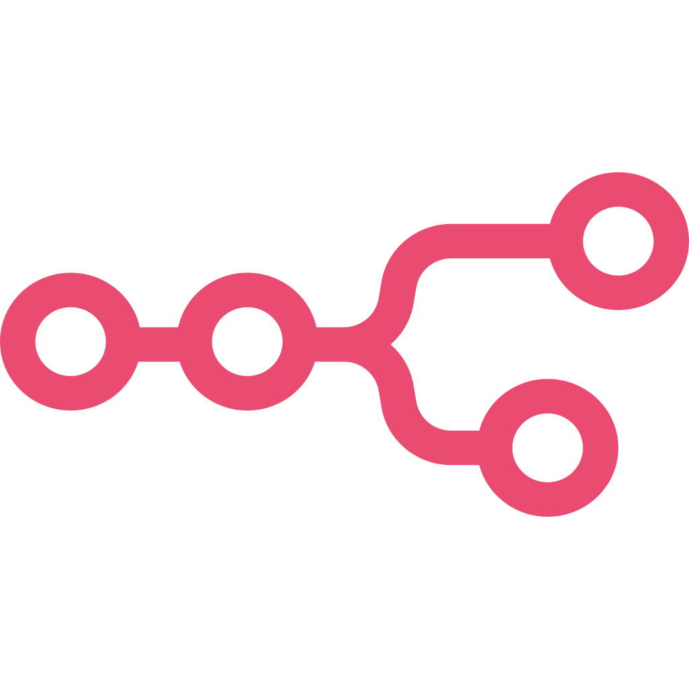

Agung Prakasa
QA Engineer & Automation Tester
Passionate QA Engineer with 5+ years of experience in test automation, API testing, and building scalable quality assurance systems.
⬇ Download CVSkills
Selenium
Appium
 Postman
Postman
 Jenkins
Jenkins
 GitHub Actions
GitHub Actions
 Docker
Docker
K6
 Burpsuite
Burpsuite

N8N
 Python
Python
 Java Script
Java Script
Projects
Posaja Website
Automated end-to-end test cases using Selenium for major user flows, improving release confidence.
View Sample Test Case Automation Test ||View ApplicationPosaja Mobile
Automated end-to-end test cases using Appium,appium inspector & Selenium Python for major user flows, improving release confidence.
View Sample Test Case Automation Test || View ApplicationAPI Automation Testing
Perform API testing in Postman and create an automation testing script that will be run using Newman, then integrated with GitHub Action/Jenkins.
View Example Video API Automation Testing With Github Action || View on GitHubAutomation Generate Test Case with N8N
Automated the generation of test cases and Postman collection flows using N8N to streamline the QA process. This solution reduces manual effort, improves testing consistency, and ensures comprehensive test coverage.
View Example Video N8N Workflow and Result